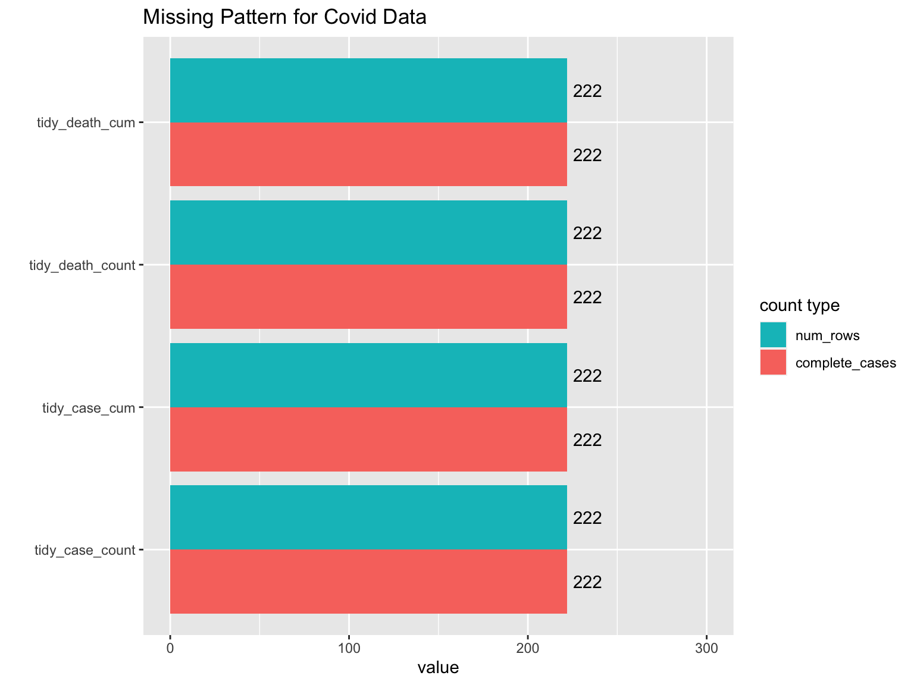

Chapter 5 Results
5.1 Section 1: From which Extent was the International Trade of the US Affected During Pre- and Post-COVID period?
5.1.1 Export in goods plunges with quick recovery
5.1.1.0.0.1 Graph 1

These two line graphs depict the fluctuations in the exports and imports of the goods and services of the US from 2019 to 2021. Within the upper bar graph, there is an obvious and sharp decline in the export amount in goods starting at February 2020. Considering the first case of COVID-19 in the US detected by CDC on 20th Jan, 2020, it could be concluded that this significant plunge temporarily coincided with the national outburst of COVID-19. Likewise, after reached a lowest ebb (around 60% of the original amount) at the middle of 2020, the export amount of the goods enjoyed a rebound to the original average at the end of this year. Similarly, the import of goods as well suffered a sudden decrease in total amount during the same time span, yet from a relatively modest extent.
On the other hand, similar to those of the goods, the import and export of services were also affected during this time period yet in a rather slight extent. According to both line plots, it is pretty overt that the import and export of the services also suffered a sudden fall since February 2020, particularly the export of the services. Nevertheless, compared with the rebounded exports and imports of the goods, it took a relatively longer time for services’ trading amount to recover: till the end of the observation span, neither the import nor the export of services had returned to the original value before the outburst of COVID-19.
To summarize, comparing the import and export of the goods and services, we found:
From the categorical perspective, the international trading of the US in both services and goods experienced significant declines during the period from February 2020 to Dec 2020.
Specifically, the imports and exports of goods, compared with those of the services, were more vulnerable in this period due to their excessive average amount. Nevertheless, the trading in the goods recovered in a much shorter term rather than that of the services.
Likewise, from the aspect of trading direction, the export amount of the US suffered a much more significant loss relative to the import amount.
Such phenomenon could be accounted from multiple viewpoints. As the trades in services basically depend on labor-sparse jobs, including financial services, intellectual property, telecommunications, information services etc., the pandemic was barely capable of immediately paralyzing the major producers of these services. By contrast, since the production and transportation of the goods may require intense labor, the massive outburst of COVID-19 may seriously jeopardize their source of human labor. Thus, the trading in goods were more affected during this period. On the other hand, compared with exportation, the importation of goods and services basically came from international markets or foreign producers, which were commonly multiple-sourced as well as hard-wired, and therefore were comparatively stable and robust.
5.1.2 No significant shift in product end-use
5.1.2.0.0.1 Graph 2

From these two grouped box plots, we can tell the State’s dependency on each category of goods’ import and export. All products are divided into six principal end-use categories and within each there are more sub level categories. Note that we plot the value of each subcategory as a data point here, so this graph does not suggest anything on the total value of each principal category but the underlying distribution instead.
Generally, regarding both import and export, the trading amount of automotive-related products was the highest. Among all exported goods, other manufacturing products such as capital goods and industrial supplies as well occupied decent trading amounts. And among all imported goods, the general patterns are like that of exported goods, except for capital goods which takes lower value compared to export and consumer goods is ranked higher probably because of several outliers. The pattern for both 2020 and 2021 are quite similar in the sense that we do not seem to observe significant shift in values between the same pairs. However, 2021 seem to slightly outperform 2020 which suggests a recovery in the economy.
We can look into these outliers within each principal categories: In terms of export, for Capital goods, except automotive, the highest value products are Semiconductors and Industrial machines; for Industrial supplies and materials, Crude Oil and Petroleum products are the highest; for Consumer goods, ‘Pharmaceutical Preparations’ is the most notable outlier. In terms of import, most outliers are the same except we are especially interested in the consumer goods division. Taking an in-depth look, we found out that besides ‘Pharmaceutical Preparations’ as the leading outlier, ‘Cell phones and other household goods’, ‘Apparel, textiles, non-wool or cotton’, and ‘Toys, games, and sporting goods’ also appear on the list. So, we can tell the production of these goods in US rely heavily on import.
Hence, regarding the two box plots above, we could roughly conclude that:
During the COVID-19 period, the US is mostly dependent to the imports of auto-related products, capital goods, and consumer goods, and the exports of auto-related products, capital goods, and industrial supplies.
Compared with those in 2020, the imports and exports of each category of good experience an elevation in the total trading amount in 2021, which shall be considered a harbinger of recover.
5.1.3 Food stays stable while manufacturing industry is hit
5.1.3.0.0.1 Graph 3
The two faceted bar plots about the fluctuations in the imports and exports of each principal end-use category tells us how imports and exports of each good category change over time. From the temporal viewpoint, we could conclude that the plunge in trading amount of most categories of products occurred during the period from March 2020 to September 2020. Likewise, from the category-wise perspective, it is obvious that industrial supplies, capital goods, and auto-related products, categories with relatively high trading amounts, suffered tremendous fall during this period. By contrast, though most categories of goods experienced declinations in trading amounts, the exports, and imports of Foods, Feeds, and Beverages maintained stable, without any significant raise or fall.
Hence, from this graph, we could summarize that:
Products that the US majorly depends on all suffered serious plunges in importing and exporting amounts.
All plunges occurred during the period from March 2020 to September 2020.
The import and export of
Foods, Feeds, and Beverages, however, remain constant during this time span.
We believe that the observation Foods, Feeds, & Beverages is relatively stable could be explained from two aspects: Firstly, the food category counts as life necessity, meaning the demand elasticity is high. Firms usually won’t stop the production for these goods and even if they are forced to do so in extreme situations, the government might step in and provide support or enforcement to ensure stability. Second, the production of most agricultural and food products is highly automated in the US, which means it doesn’t require lots of labor, and thus would not be affected by Covid as much.
5.1.4 Spot the close trading partners of US
5.1.4.0.0.1 Graph 4

These two geographical maps portrait the trading amount of each country with respect to US in year 2020. The value amount is very unevenly distributed. There are several major trading relationships with extremely large values, while the rest are staying below the tens (in billions of dollars). That is the reason why we choose to manually set the groups for import and exports and display it in this discrete format instead of the original continuous values. Note that the data in the original excel sheet is not inclusive of all the countries around the world, so here we only take a look at the available selection of countries.
For export, the top 5 trading partners with the United States are Canada, Mexico, China, Japan, Germany. Then in the top 10 range, we have some other European countries, as well as Brazil. For import, the top 5 trading partners with the United States are China, Mexico, Canada, Japan, Germany. Then in the top 10 range, we have some other European countries, as well as India. One interesting correlation we can discover in this case is that in general, a close export relationship with US also indicate a close import relationship with US. In our following discussions, we will be looking into some of these close partners in detail. In addition, we can see that these top 10 trading partners are located in different continent across the world, witch include North America, South America, Asia, and Europe. So that depicts a quite diverse trade network. However, we do observe a closer trading relationship for US with countries that are adjacent geographically.
From these graphs, we could conclude:
The US’ trading partners are distributed mostly in the western Europe, eastern Asia, and north America.
North American trading partners are high in both export and import amount. Eastern Asian states generally have relatively lower export amount yet higher import amount.
5.1.5 The hit of Covid is real especially on close trading partners
5.1.5.0.0.1 Graph 5

In the above Cleveland dot plots, we zoom in to take a further look at these close trading partner countries defined and extracted from graph 4. We first take a top level overview on the annual amount of export and import for each of the countries in the first two graphs. By juxtaposing the annual sum of year 2018, 2019, and 2020 together, it’s very obvious that the sum for 2020 is indeed the lowest among the three. This observation applies for almost every country with few exception. In particular, the top 5 trading partners are the ones that are most affected by COVID-19 in this case, as we observe significant amount of drop in both the export and import values for them. And overall import seem to be affected less than export which reaffirms our observation from previous discussions. This again suggests that the US might have undergone worse situations of pandemic compared to its trading partners, thus experiencing a deterioration in its production and supplies.
Since the current year, year 2021, hasn’t been finished yet, we decide to not put it in the annual comparison graphs directly. As an alternative, we laid out the quarterly data for year 2020 and 2021 for comparison. For the first quarter, both import and export are similar between these two years. But for the second quarter, the distinction here is again quite obvious. This observation reaffirms the fact that the US international trade underwent a ‘hit and recovery’ process during the pandemic period.
Hence, we could conclude that:
Compared to the annual trading amounts of 2018 and 2019, that of 2020 has a significant decrease.
Relative to the quarterly trading amount of 2020, that of 2021 enjoyed a rebound in the first and second quarter.
The 7 closest trading partner with the US are China, Japan, Korea, Germany, the UK, Canada, and Mexico. Thus, in the following section, we would mostly focus on COVID condition in these 7 countries.
5.2 Section 2: Could the spread of COVID19 account for such changes?
5.2.1 Severity of Covid among close partners: Is it the major killer?
5.2.1.0.0.1 Graph 6

Now we’ve established close trading partners with US and identified the partners who were most affected during the pandemic period. We want to know if this could all be attributed to Covid. To understand this, we decide to take a look at the Covid situation for the top trading partner countries. The above line charts are the Covid case counts and death counts respectively for the top 7 partner countries. For the diagnosing cases, we observe a similar pattern among different countries. The lines are quite correlated in the sense that they usually peak together or with a slight delay. This is quite intuitive as the huge extent of globalization often accelerate the transmission of Covid-19.
However, a more counter-intuitive observation is that countries with very high death rate such as UK and Germany are not the ones that experience the largest decrease in trading values from what we can tell in the annual plot in Graph 5. While countries with the most significant drop, such as Canada and China, don’t appear to be the most severe ones in this death counts plot. This could be due to a variety of reasons: for instance, the base trading amount is different, so a multiplying factor on the base could have effect to a different extent; the population and production mode is different, which lead to a varying response effectiveness under the Covid; and various other confounding variables such as exchange rate might also account for this reverse relationship.
5.2.2 Surprise is what shock the economy the most
5.2.2.0.0.1 Graph 7

In the combination of three plots above, we planned to compare the monthly detected COVID-19 cases in the US with the American international trades from temporal perspective, to examine whether the massive COVID-19 cases led to the declination in trading amounts. Nevertheless, according to the graphs above, it seems that the declination in trades in fact occurred during the period from February 2020 to September 2020, which was the beginning stage of COVID-19, and the detected cases were comparatively modest. By the contrast, at the globally maximal peak of COVID-19 cases at the December 2020, the corresponding trading amount was indeed recovering. Moreover, from Jan 2021 to Aug 2021, though the detected COVID-19 cases were much more excessive than those in the beginning stage, the international trades of the US in fact were enjoying an overall rejuvenation.
Thus, we may conclude:
The fall in trading amount mostly occur at the beginning stage of COVID-19
The rise and fall in the COVID-19 cases in the US did not indicate the trading loss.
Such phenomenon may be explained from various aspects. While the COVID-19 first hit the US in early 2020, people are fully surprised and no one, both individuals and firms, are prepared for this. It provoked huge panic among the population, caused interruptions in production, and disrupted the normal supply chain and logistics. Although there is another wave of huge rise in Covid cases at the end of 2020, we can see for this time, the dent on the bar charts is much smaller compared with the previous hit. Since people are now better prepared for this situation, and plenty of measures to cope with this circumstance has emerged, it’s reasonable that the hit is no longer as impactful as before. Indeed, this fact for unexpectedness also applies to many other aspects of the economy as well, especially in the financial market.
5.2.2.0.0.2 Graph 8
In the grouped graphs above, we repeated the operation we did for US above (for Graph 7) to create faceted graph for each trading partner and compare the correlation between their trading amount with the US and the cases of COVID-19. Regarding the graphs above, we firstly observe similar patterns in COVID cases for adjacent countries or countries within the same continent. For instance, Japan and South Korea look close on their COVID case lines. And we know China in this case is a special outlier as it suffers from the pandemic earlier than most other countries, so it’s as expected to see a different pattern for China’s data. This also partially explain the issue that we had in Graph 5: as the Covid case counts for China in 2020 would be much less than other countries, directly use it in the comparison would be somewhat inaccurate to account for the drop in US-China trade amount.
Likewise, we also found that, like the conclusion in graph 7, though the patterns of COVID-19’s spread were various across nations, their fluctuations in trading amount were similar: the declinations all occurred during the first or second quarter of 2020. Thus, such inconsistency also states that for the closest trading partners of the US, the accumulation of COVID-19 cases would not directly lead to the trading loss.
Therefore, we may conclude that:
Most trading partners of the US bore trading loss at the initial states of the COVID-19 in their countries.
There is no direct correlation between the maximal COVID-19 cases and the trading loss.
5.2.2.0.0.3 Graph 9

To conclude and summarize our discussion, we put forth an improved version of the world map at the end. By combining both trading amount and Covid cases into our color scale, we obtained a more visually intuitive depiction of the interrelatedness of these two factors. For the measure that represents Covid severity, we choose the metric of Case Rate. This is defined as the number of cases per thousand people for each country. We used supplementary information from the library wpp2019 in R to determine the world population in 2020. We divided the export/import and the case rate into three levels based on their respective distribution and came up with the two-dimensional color scheme.
In particular, for export, we can see that Brazil and France are two countries with high case rate and received high imports from US (US export to these countries); for import, France remains as the country with high case rate and exported a lot to the US (US import from it). Most South American countries are high in case rate but not as much engage in trading activities with US (seen as mostly red-ish), while most North American and Pacific Rim Countries are relatively low in case rate and involves in large amount of trading activities with US (seen as mostly blue-ish). For European countries, there’s a mix of behaviors and we’ll need to look into them case by case. And for African countries, the selected one shown in this graph appear to outperform most countries in terms of case rate but be aware that they are not representative of the whole picture for the African continent. It’s generally recognized that African countries are not very strong trading partners with the US and this is confirmed by their light purple-ish color.